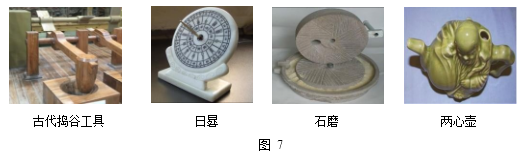
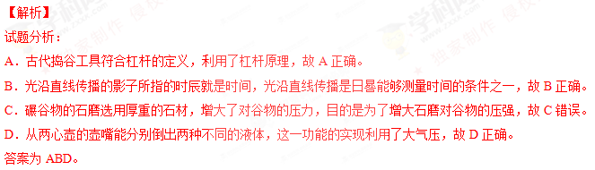
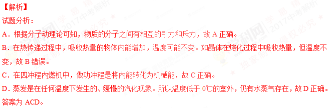
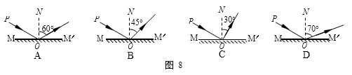

2017年北京市中考物理试题 · 选择题 第16、17、18、19、20题 · 对应解析
16．图 7 展示了我国古代劳动人民的智慧成果，对其中所涉及的物理知识，下列说法中正确的是

A．古代捣谷工具利用了杠杆原理
B．光沿直线传播是日晷能够测量时间的条件之一
C．碾谷物的石磨选用厚重的石材，目的是为了减小石磨对谷物的压强
D．从两心壶的壶嘴能分别倒出两种不同的液体，这一功能的实现利用了大气压
【答案】ABD

考点：杠杆原理 光的直线传播 压强 大气压
17．下列说法中正确的是
A．用磁感线可以描述磁场的强弱
B．只要导体在磁场中运动，该导体中就会产生感应电流
C．通电导体产生的磁场的方向与通过该导体的电流方向有关
D．利用撒在磁体周围的铁屑可以判断该磁体周围各点的磁场方向
【答案】AC
【解析】
试题分析：
A、用磁感线可以描述磁场的强弱，磁感线越密的地方，磁场越强，故A正确。
B．闭合电路的一部分导体在磁场中做切割磁感线运动时，产生感应电流。所以导体在磁场中运动，不一定会产生感应电流，故B错误。
C、奥斯特实验说明了通电导体周围存在磁场，该实验还表明电流方向改变时，其磁场方向也随之改变，所以，通电导体产生的磁场的方向与通过该导体的电流方向有关，故C正确。
D．利用铁屑可以看到磁体周围磁场的分布情况，但看不到磁场方向，小磁针在磁场中某一点静止时，N极的指向即为该点磁场的方向，故D错误。
答案为AC。
考点：磁感线 电磁感应 电流的磁效应
18．有关热现象，下列说法中正确的是
A．组成物质的分子之间存在引力和斥力
B．在热传递过程中，吸收热量的物体温度升高
C．在四冲程内燃机中，做功冲程的功能是将内能转化为机械能
D．温度低于 0℃的室外，仍有水蒸气存在
【答案】ACD

考点：分子动理论 热传递 做功冲程 蒸发现象
19．下列说法中正确的是
A．以行驶的汽车为参照物， 路边的树木是运动的
路边的树木是运动的
B．只要物体的位置发生变化，物体的机械能就发生变
C．悬浮在盐水中的鸡蛋，受到盐水的作用力的合力为零
D．用锤子将铁钉钉入木板，锤子对铁钉的作用力与铁钉对锤子的作用力大小相等
【答案】AD
【解析】
试题分析：
A．以行驶的汽车为参照物，路边树木的位置是变化的，所以路边的树木是运动的，故A正确。
B．物体的位置发生变化，但物体的速度和高度不变，则物体的机械能就不会发生变化。比如物体在水平方向上做匀速直线运动时，机械能不变，故B错误。
C．鸡蛋悬浮时，受到的盐水的作用力为浮力，此时浮力的大小等于重力，所以不为0，故C错误。
D．用锤子将铁钉钉入木板，锤子对铁钉的作用力与铁钉对锤子的作用力大小是一对相互作用力，大小相等，方向相反，故D正确。
答案为AD。
考点：参照物 相互作用力 机械能
三、实验选择题
20．图 8 所示的四个光路图中，MM′为平面镜，PO 为入射光线，ON 为法线，入射角∠PON 等于 60°，其中符合光的反射定律的光路图是

【答案】A
考点：光的反射光路图